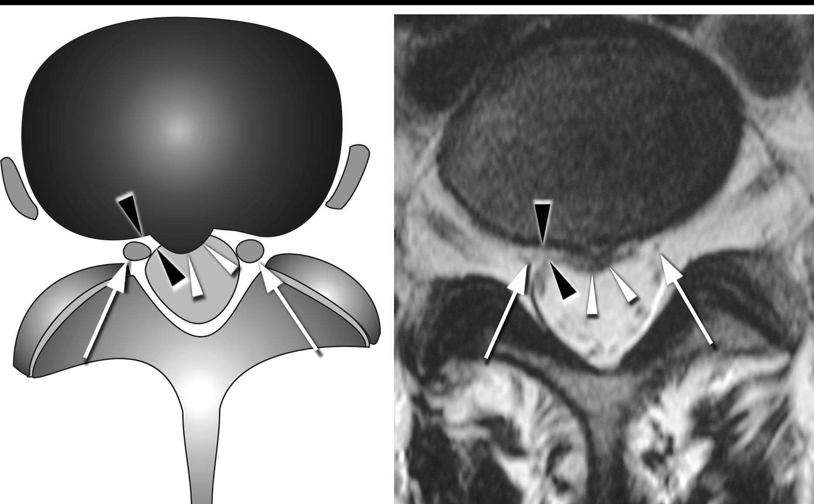
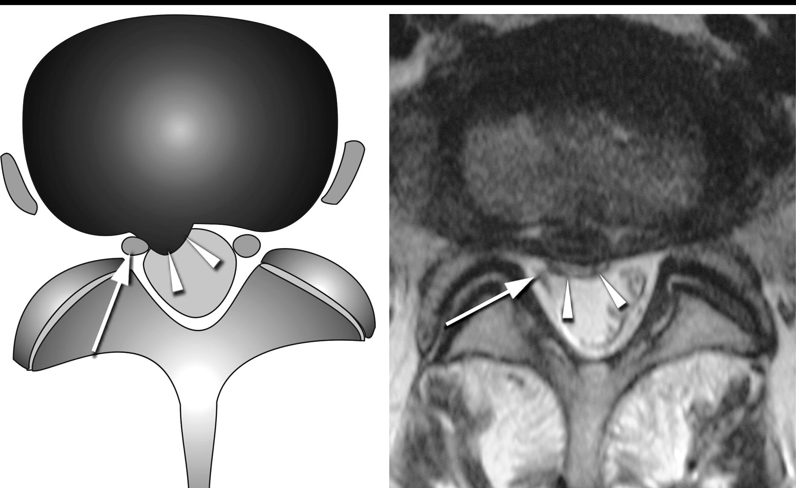
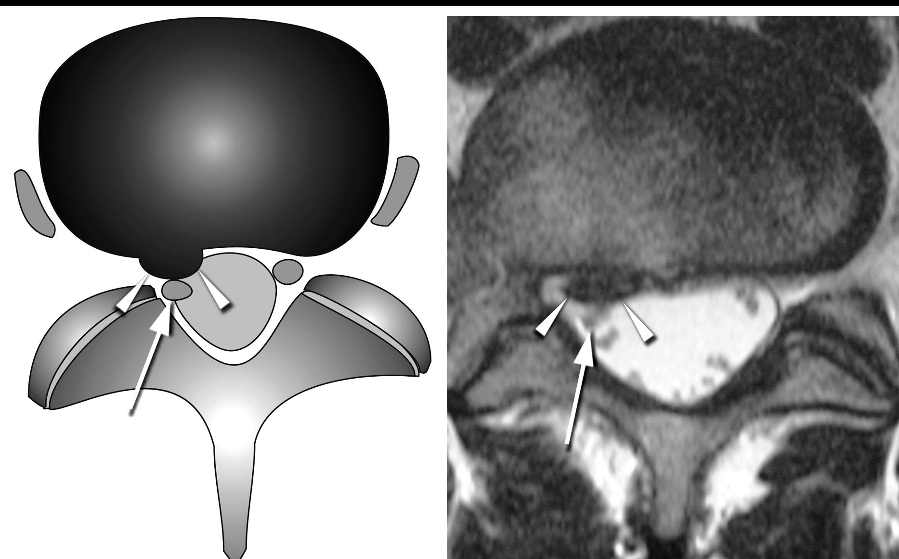
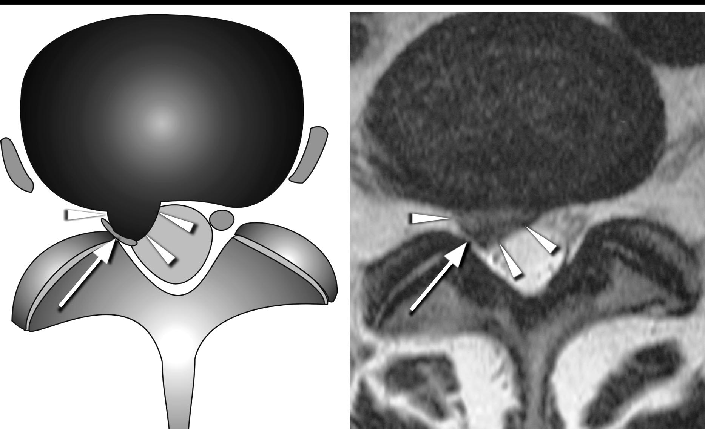
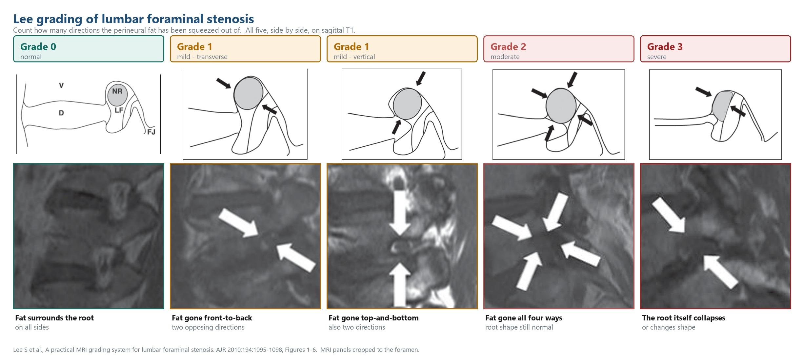
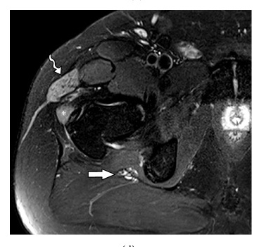
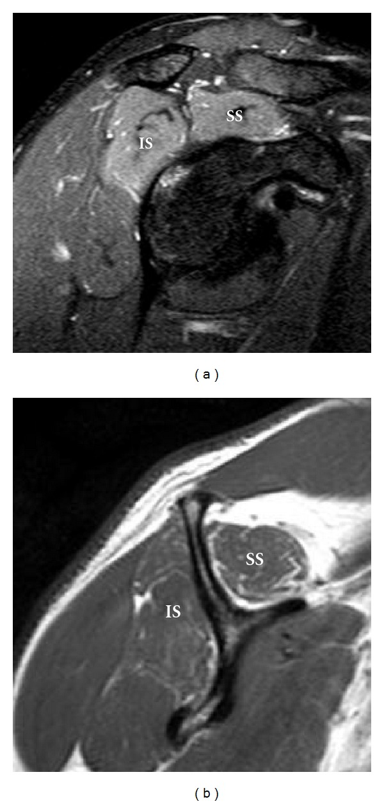

Neuroradiology series · Part 3 of 4
Two zones, two grading systems, two sequences — and the muscle finding that tells you which level is live.
Companion to Parts 1 and 2.
Part 2 graded the middle of the canal, where the whole cauda equina sits. This part is about the two places a single named root gets caught — and they are different problems, on different sequences, with different grading systems.
Four grades, on axial T2, describing what a disc is doing to one root. The whole system is a sequence of four verbs: nothing, touching, pushing, squashing.

Axial T2 at the disc level
No contact between disc material and the root, and the epidural fat layer between them is still there. That fat layer is the thing to look for — it is the first thing to go.

Axial T2 at the disc level
Disc material is touching the root and the fat layer between them has gone. But the root is still in its normal position — it has not been pushed anywhere.

Axial T2 at the disc level
The root has been pushed backwards out of its normal position by disc material. It is displaced, but it still has its own shape.

Axial T2 at the disc level
The root is trapped between disc material and the wall of the canal. It may look flattened, or you may not be able to tell root from disc at all — that inability to separate them is the finding.
Four grades again, but a completely different question. In the foramen the root normally sits in a cuff of fat, and the grade counts from how many directions that fat has been squeezed out.

The five grades, and the case shown for each above:
| Grade | What you are looking at | The case in the figure above |
|---|---|---|
| 0 · normal | Fat surrounds the root on all sides. | 62-year-old woman with low back pain; a normal root, fat cuff intact. |
| 1 · mild, transverse | Fat gone in two opposing directions — here front-to-back. | 69-year-old woman, right leg pain; narrowed transverse width of the foramen. |
| 1 · mild, vertical | Also two directions, but top-and-bottom instead. Same grade. | 63-year-old man, left leg weakness; reduced foraminal height. |
| 2 · moderate | Fat gone in all four directions. Root shape still normal. | 65-year-old woman, right leg pain; narrowed disc space, thickened ligamentum flavum. |
| 3 · severe | The root itself collapses or changes shape. | 82-year-old woman, right leg pain; collapse of the right L4–L5 root. |
Schematics and cases from Lee S et al., AJR 2010;194:1095–8, Figures 1–6 permission pending. Every panel is clickable.
Everything in Parts 1 and 2 was graded on T2. This part is where that habit breaks.
| System | Sequence | Because |
|---|---|---|
| Schizas · central canal | Axial T2 | You are looking for cerebrospinal fluid, which is bright on T2. |
| Pfirrmann · lateral recess | Axial T2 | You are looking at the root against fluid and disc, in cross-section. |
| Lee · foramen | Sagittal T1 | You are looking for fat, which is bright on T1. On T2 the fat cuff is far less conspicuous and the grade becomes guesswork. |
Three levels look degenerate. The patient has one radiculopathy. Anatomy cannot tell you which level is live — but the muscle sometimes can.

Axial T2 fat-sat or STIR · both sides in the frame, always
Diffusely bright muscle on one side, normal muscle on the other. No mass, no fluid collection, no disruption of the muscle architecture — just signal, filling the whole belly of the affected muscles.
An honest caveat about this image. These are gluteal and tensor fascia lata muscles, not multifidus — the same phenomenon in the same region, one myotome further out. I could not find an openly licensed image of acute paraspinal denervation specifically, having looked from several directions. What this teaches is the appearance; the muscle you would apply it to in the lumbar spine is multifidus, immediately beside the affected level.

The same muscles · T2 fat-sat above, T1 below
This is the confusion worth heading off, because the two mean opposite things about time and they appear on opposite sequences:
This patient shows both — common, and the reason the two sequences have to be read together.
| Call it and act on it | Defer it, always |
|---|---|
| Which root is affected, and on which side | Any mass or enhancing lesion around a root |
| Pfirrmann grade in the recess · Lee grade in the foramen | Whether a root is inflamed — that needs contrast and a radiologist |
| Whether the fat cuff is preserved or gone | Plexus or extraforaminal disease |
| Whether the imaging matches the dermatome | Whether the finding is old or new, from one study alone |
| Asymmetric muscle signal, if you see it | The operative level — the surgeon’s call |